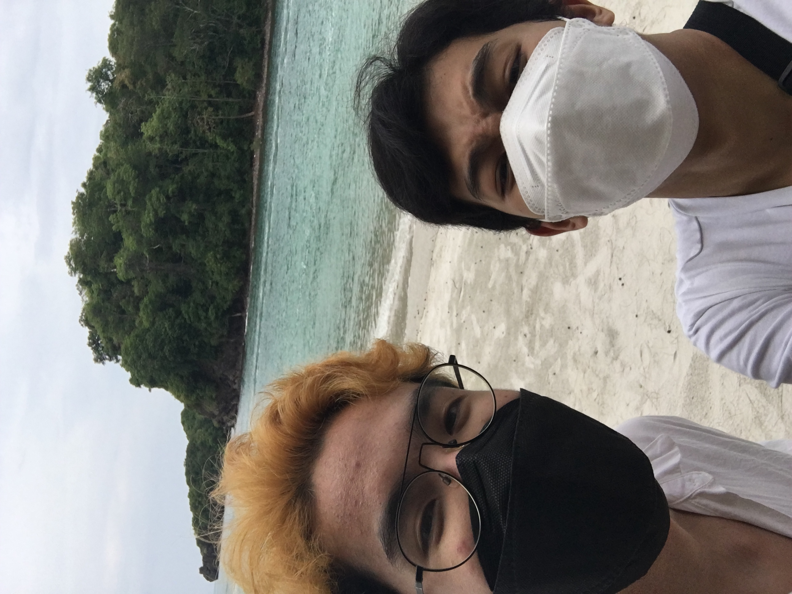
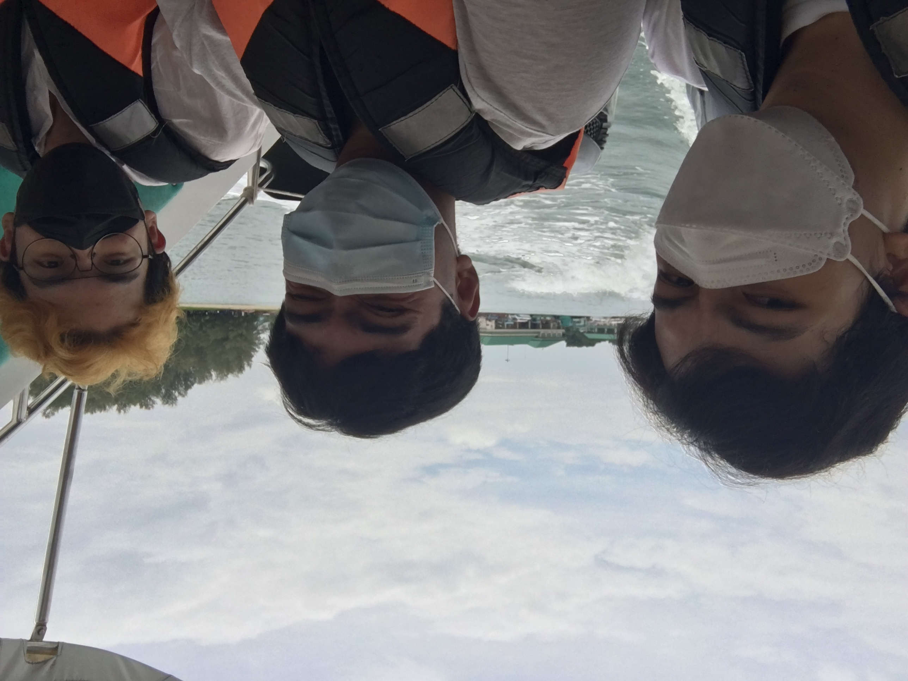
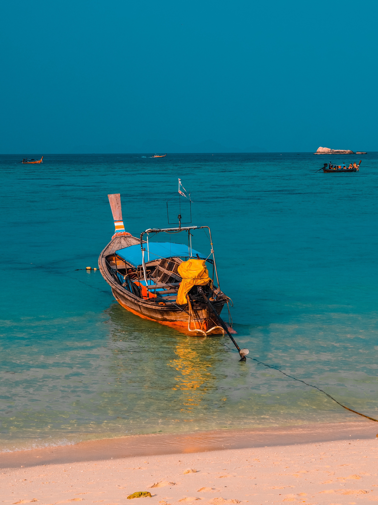

One day I was going to the beach with one of my friends. We drove to his beach house so we could hang out and go the beach. The beach house was in a very respectable neighborhood. We then got out of the car and grabbed our surfboards from trunk and headed to the beach. When we got to to the beach there were immensely large waves.
As soon as I saw how big the waves were I absolutely had to get in the water and ride them. I then ran in the water with my friend as we floated buoyantly to catch the next wave. Then a big wave came and we got on our boards. We were both surfing the wave until my friends slipped off from his board because there was residue from the wave on it. I was too busy focusing on riding the wave to notice that he slipped.
I could spend half of the beach, built a castle from the sands, swam to catch the waves, or just simply sat there to wait for mr.sun came down by the way I did these activities after I am bored of my friend. There are so many things about the beach that makes it a calming and soothing place. The most obvious objects that stand out are the sights, and sounds, but most definitely the beautiful landscape. The less noticeable when going to the beach are the smell and most of all taste. There is nothing to dislike about going to the beach except the seagulls that are flying around looking for something to attack. Going to the beach is like the first and last warm summer day after a long cold and tormenting winter season.
 The many sounds of the beach can be quite soothing. The sound of the deep waves splashing while coming up on to the shore knocking everything out of its sight. It's just something about hearing the waves, and the water splashing which causes a relaxing sensation that just puts me into a deep, peaceful sleep like I'm in a coma. The sound of the slight breeze blowing against the leaves of the nearby trees gives off a good feeling on going to the beach.